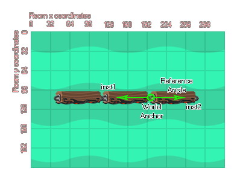

physics_joint_weld_create(inst1, inst2, anchor_x, anchor_y, ref_angle, freq_hz, damping_ratio, col)
| Argumento | Descripción |
|---|---|
| inst1 | La primera instancia para conectarse con la articulación |
| inst2 | La segunda instancia para conectarse con la articulación |
| anchor_x | La coordenada x para la articulación, dentro del mundo del juego |
| anchor_y | La coordenada y para la articulación, dentro del mundo del juego |
| ref_angle | El ángulo de articulación para mantener |
| freq_hz | Esta es la frecuencia de oscilación para la articulación, en hertz |
| damping_ratio | Esta relación de amortiguación para la junta |
| col | Si las dos instancias pueden colisionar (verdadero) o no (falso) |
Devoluciones: índice de la articulación
La junta de soldadura está diseñada para unir dos accesorios en un enlace fuerte pero flexible. La junta de soldadura permitirá la flexión entre los dos accesorios unidos pero sin el estiramiento asociado con, por ejemplo, una junta de distancia, y siempre tratará de "saltar" de regreso al ángulo de referencia cuando se someta a cualquier esfuerzo o carga. Define el punto en la habitación donde se debe crear la unión, así como el ángulo que deseas que la articulación intente y mantenga en todo momento, como se muestra en la siguiente imagen:

Como puede ver, los puntos de anclaje se especifican como coordenadas de la sala, por lo que se debe tener cuidado al definirlos, especialmente si las instancias se crean al mismo tiempo que las juntas en lugar de colocarlas en la sala a través del editor de sala. También debe tener en cuenta que las uniones se crean independientemente del tamaño del sprite de las instancias o los accesorios que han unido. Por lo tanto, si crea una unión soldada en algún lugar que no sea el origen de la instancia, sigue siendo válida y restringirá las dos instancias relativas a la posición en la que se creó.
Dado que la junta de soldadura es flexible y se doblará y flexionará cuando se encuentre bajo tensión, puede ajustar la frecuencia de oscilación (en Hz) y la relación de amortiguación para la junta para obtener diferentes efectos. Es posible que necesite jugar con estos valores para mejorar Sintonícelos y se recomienda que comience con valores más pequeños e increméntelos hasta que obtenga el efecto que desea.
Si configura el valor "col" para true entonces las dos instancias pueden interactuar y colisionar entre sí, pero solo si tienen eventos de colisión, sin embargo, si está configurado para false, no colisionarán sin importar qué.
var i, fix, o_id, p_id;
p_id = noone;
o_id = noone;
fix = physics_fixture_create();
physics_fixture_set_box_shape(fix, 64, 32);
for (i = 0; i < 5; i++;)
{
o_id = instance_create_layer(x + (128 * i), y,
"Instances", obj_BridgePart);
physics_fixture_bind(fix, o_id);
if i > 0 && i < 4
{
physics_joint_weld_create(p_id,
o_id, x + (128 * i) - 64, y, 0, 10, 12, true);
}
p_id = o_id;
}
physics-fixture_delete(fix);
El código anterior creará un accesorio, luego usará un bucle para crear un número de instancias, vinculando el accesorio a cada nueva instancia y luego uniéndolas todas juntas usando una junta de soldadura. Finalmente, el dispositivo se elimina de la memoria.